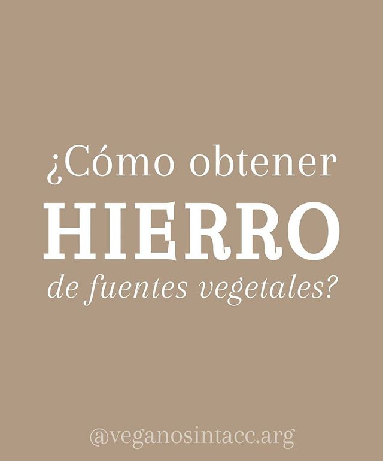

¿Cómo obtener HIERRO de fuentes vegetales?
Autor
ʟᴜɴᴀ ʙᴀʀʀᴏɴɪ
Es un mito decir que hay más riesgo de tener anemia por no consumir cuerpos o derivados de animales, lo más importante a tener en cuenta es lo mencionado en las fotografías, que además de consumir alimentos con Hierro, debemos tener en cuenta los alimentos que acompañan a una correcta absorción
Leer Articulo